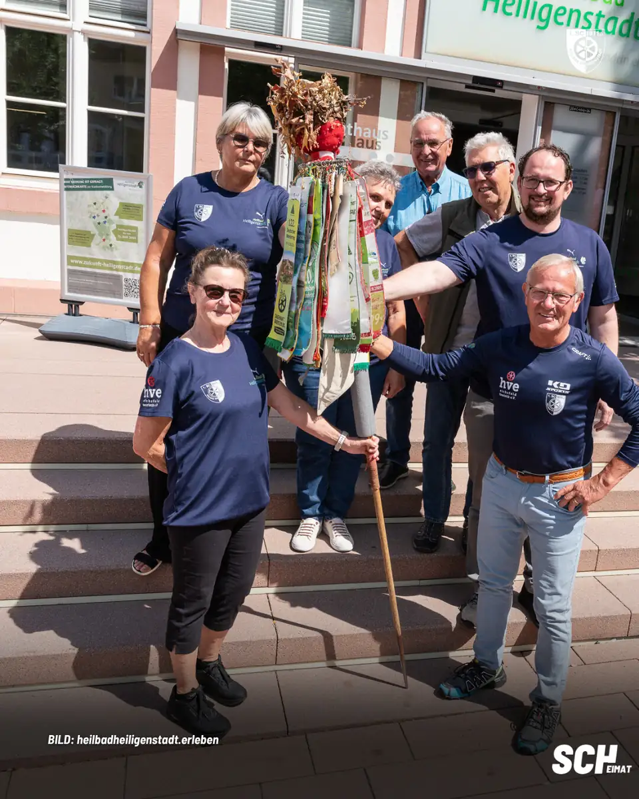
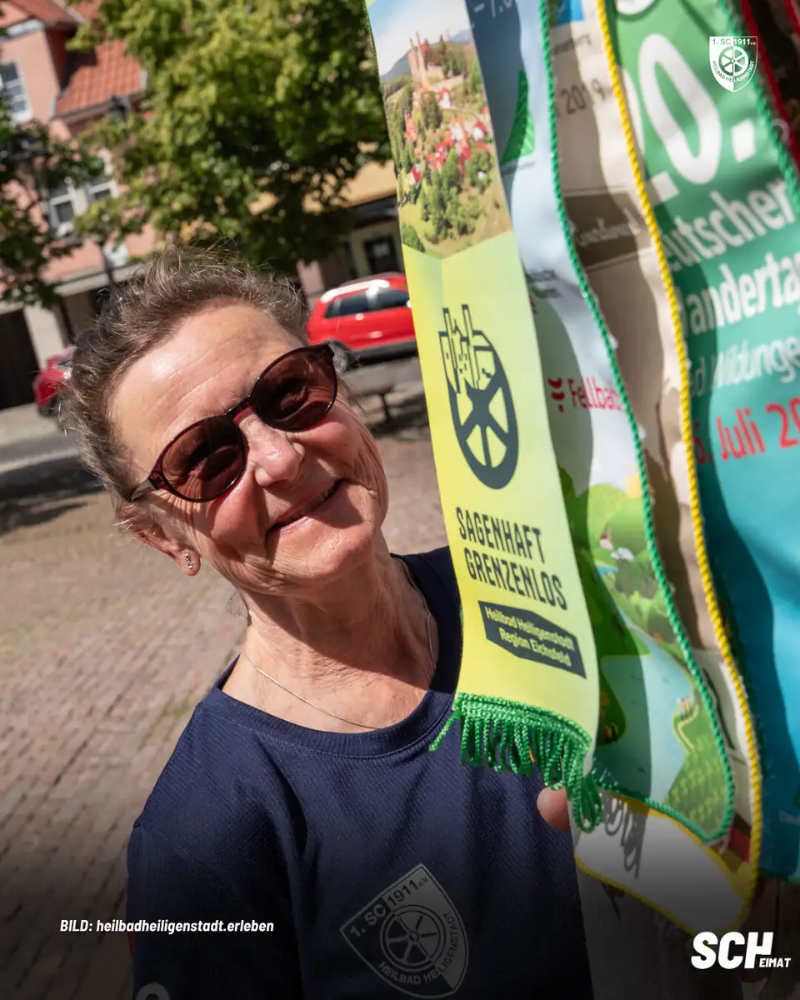

Eine besondere Aufgabe für unsere WanderabteilungWenn am 15. Juni die Wanderstiefel geschnürt werden, beginnt für unsere Wanderabteilung eine ganz besondere Reise. Es ist nicht nur eine Wanderung durch einige der schönsten Landschaften Mitteldeutschlands – es ist eine Reise voller Symbolkraft, Gemeinschaft und Tradition. Als Ausrichter des 122. Deutschen Wandertages wurde uns eine besondere Ehre zuteil: die Übergabe des Wimpelstabes an den nächsten Gastgeber. Dieser Wimpelstab ist weit mehr als nur ein Symbol. Er steht für die Verbundenheit der Wandervereine in Deutschland, für gelebtes Ehrenamt und die Leidenschaft für das Wandern. „Wir freuen uns sehr, diese besondere Aufgabe übernehmen zu dürfen. Es ist für uns eine große Ehre, den Wimpelstab persönlich nach Oberwiesenthal zu bringen und damit die Verbindung zwischen zwei Deutschen Wandertagen sichtbar zu machen“, betont Wanderwart Manfred Weinrich.
Schritt für Schritt durch Mitteldeutschland
Die Strecke nach Oberwiesenthal wird nicht an einem Stück zurückgelegt. Stattdessen führen zahlreiche Tagesetappen die Wandergruppe quer durch Thüringen und Sachsen.
Von Heilbad Heiligenstadt aus geht es zunächst auf dem Naturparkweg Leine-Werra in Richtung Creuzburg. Anschließend folgen die Wanderer dem berühmten Rennsteig mit Stationen am Großen Inselsberg, in Oberhof, Masserberg und schließlich bis nach Mödlareuth. Von dort führt der Kammweg Erzgebirge-Vogtland weiter bis ins Erzgebirge nach Oberwiesenthal. Unterstützt wird die Wandergruppe dabei vom Naturpark Eichsfeld-Hainich-Werratal, dem HVE Eichsfeld Touristik e. V., der Stadt Heilbad Heiligenstadt, dem Werratalverein 1883 e. V. sowie zahlreichen befreundeten Wandervereinen entlang der Strecke. Die Wanderungen werden sowohl im Juni als auch Mitte September fortgesetzt, bevor das große Ziel erreicht wird.
Ankunft beim Deutschen Wandertag
Der emotionale Höhepunkt der Reise wartet schließlich am 24. September 2026. Dann wird der 123. Deutsche Wandertag in Oberwiesenthal feierlich eröffnet.
Wenn die „Wimpelwandergruppe“ aus dem Eichsfeld dort auf der Bühne empfangen wird und den Wimpelstab offiziell übergibt, endet eine außergewöhnliche Reise, die viele Monate zuvor in Heilbad Heiligenstadt begonnen hat. Eine Reise, die zeigt, wie lebendig die Wandertradition in unserer Region ist und wie viel Engagement in ihr steckt.
Mitwandern ausdrücklich erwünscht
Unsere Wanderabteilung freut sich über alle, die einzelne Etappen oder Teilstrecken gemeinsam mit der Gruppe absolvieren möchten. Jeder interessierte Wanderfreund und jede interessierte Wanderfreundin ist herzlich willkommen. Für eine bessere Planung wird um eine vorherige Anmeldung unter info@sc1911-heiligenstadt.de gebeten.

